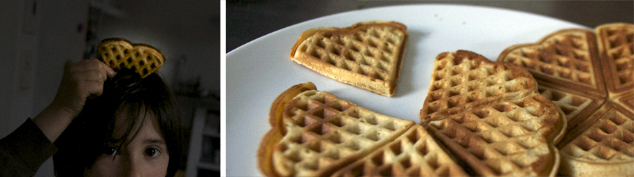
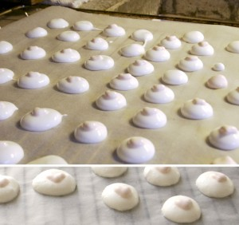
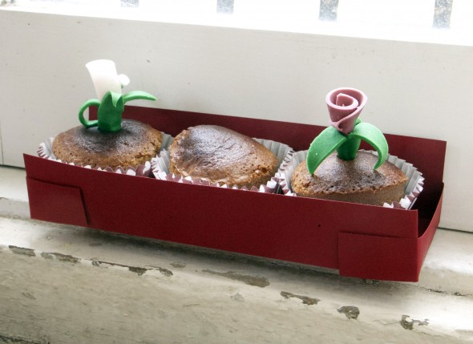
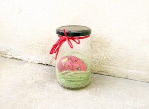
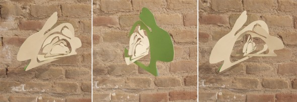

Happy Valentine's Day


Happy Valentine's Day

The eggheads we already made once , but Noah couldn`t remember it. The daily watering and watch who's getting his hair first, is really fun!
Read more →

Valentine's Day The first time I made meringue ... a very simple thing. I was surprised that the colored part stayed up without going down in…
Read more →
Mhhh flowers in a different way from my friend and neighbor Josefa. We wish a nice Spring.
Read more →
